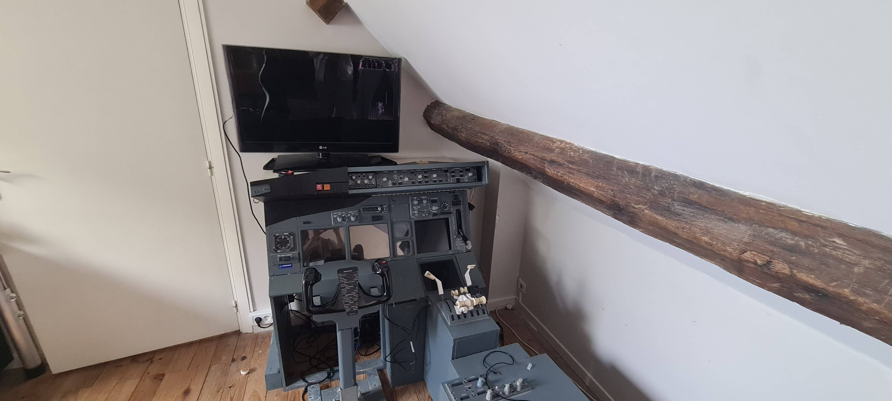
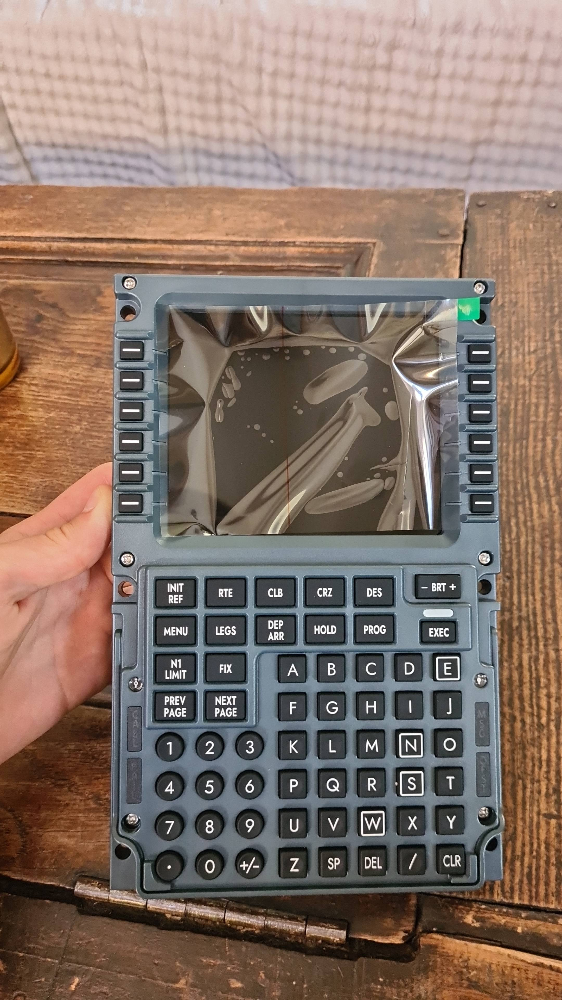

Le cockpit DIY 737

Voici le simulateur de vol de boeing 737 que j'ai racheté et amélioré au fil du temps, il est composé de modèles Opencockpit; d'une structure en bois; et une chaise dans le style du boeing 737ng. Un overhead de ce 737 est à venir, qui sera posté sur ce blog
Le CDU boeing 737 est arrivé!

Le CDU du boeing 737 est enfin arrivé; de la marque chinoise winwing, ce cdu innovant a bas prix est arrivé sur le marché international et a changé le marché; un cdu B737NG avant coutait 500 euros, aujourd'hui, il est accessible à 135 euros! Il n'est pas encore monté sur le simulateur B737ng et connecté au bridge AVEC les modules opencockpit, Cela est à venir.